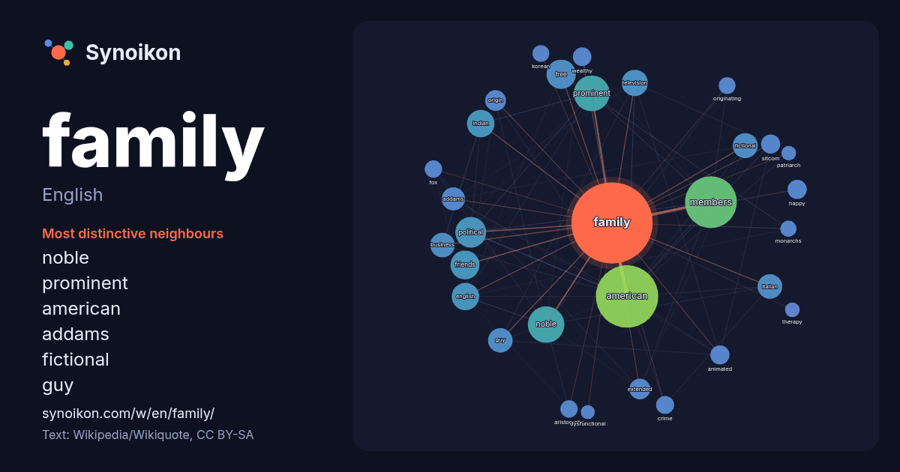

English · popular word
family
The words found around it in 1907 instances from English Wikipedia, Wikiquote and Hacker News.

Most distinctive neighbours
- noble 54×
- prominent 38×
- american 28×
- addams 26×
- fictional 25×
- guy 24×
- tree 21×
- members 17×
- friends 17×
- sitcom 17×
- animated 15×
- indian 15×
- happy 15×
- aristocratic 14×
- wealthy 14×
- italian 14×
- political 14×
- originating 13×
- extended 13×
- origin 12×
× = how many times more often than in general English Wikipedia text.
Most frequent neighbours
- american 181
- members 125
- noble 62
- prominent 60
- film 44
- political 44
- tree 40
- friends 39
- english 35
- indian 35
- life 34
- television 32
- british 30
- fictional 29
- group 29
- series 29
- business 28
- guy 28
- italian 28
- addams 25
In context
- Family (from Latin: familia) is a group of people related either by consanguinity (by recognized birth) or affinity (by marriage or other relationship) Wikipedia snippets · Family
- Family Guy is an American animated sitcom created by Seth MacFarlane for the Fox Broadcasting Company. The series premiered on January 31, 1999, following Wikipedia snippets · Family Guy
- The Kardashian family (/kɑːrˈdæʃiən/ kar-DASH-ee-ən), also referred to as the Kardashian–Jenner family, is an American family prominent in the fields of Wikipedia snippets · Kardashian family
- Modern Family is an American television mockumentary sitcom created by Christopher Lloyd and Steven Levitan for ABC. It aired for 11 seasons from September Wikipedia snippets · Modern Family
- Rothschild family (Hebrew: משפחת רוטשילד) is a wealthy Ashkenazi Jewish noble banking family originally from Frankfurt, Germany. The family's documented Wikipedia snippets · Rothschild family
- The Barrymore family, and the related Drew family, form a British–American acting dynasty that traces its acting roots to the mid-19th-century London Wikipedia snippets · Barrymore family
- The Family is the sole studio album by the American band the Family, released on August 19, 1985, by Prince's Paisley Park Records. The album features Wikipedia snippets · The Family (The Family album)
- The Addams Family is a fictional family and franchise created by American cartoonist Charles Addams. The Addams are an eccentric old-money clan who delight Wikipedia snippets · The Addams Family
More English words
- art
- autumn
- bell
- bread
- bridge
- cat
- city
- climate
- clock
- death
- desert
- dog
- food
- forest
- garden
- god
- gold
- health
- heart
- history
- honey
- horse
- island
- language
- life
- map
- mirror
- money
- mother
- mountain
- nature
- power
- rain
- road
- salt
- science
- shadow
- silence
- song
- star
- storm
- summer
- tea
- time
- train
- truth
- water
- winter
- work
Precomputed on 2026-10-09 with default settings (±5 words, medium corpus). The interactive map can refresh it with live data.